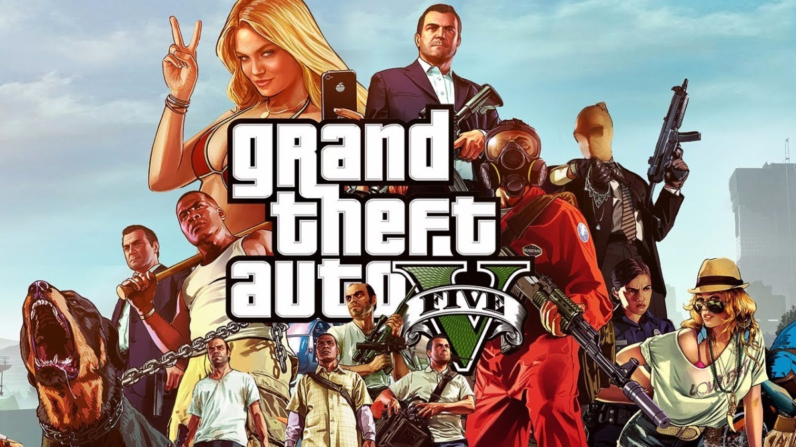
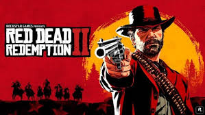
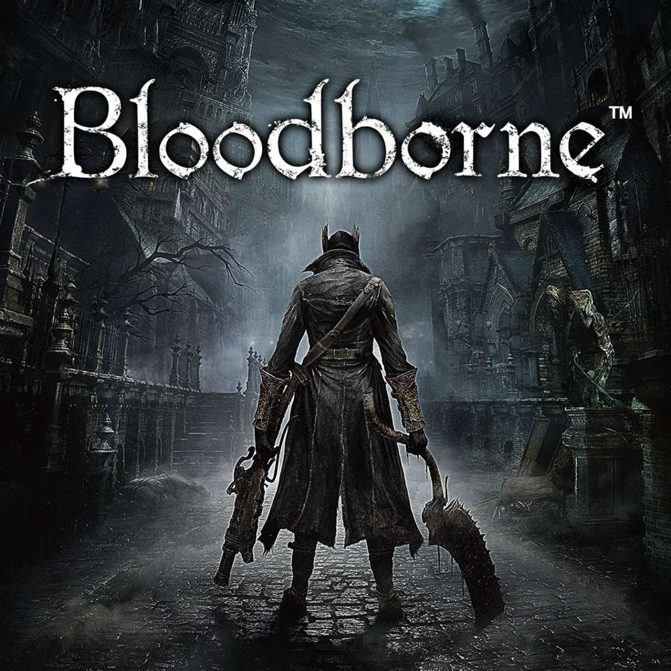
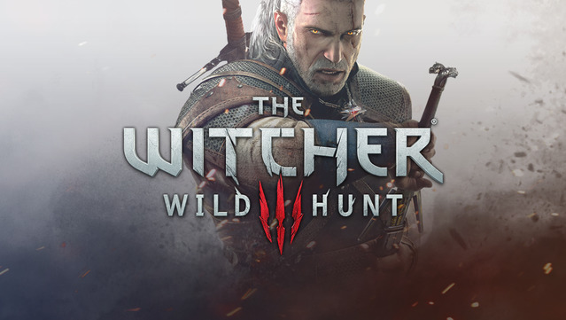

Conheça a história do PlayStation
-
O Playstation, conhecido como PSX ou PSOne, chegou às lojas japonesas em dezembro de 1994, ainda concorrendo com os consoles da geração anterior. Foi apenas um ano depois, em setembro de 1995, que o produto finalmente chegou ao Ocidente. Os primeiros jogos não empolgaram muito, e tinham grandes dificuldades em adaptar todo o potencial do aparelho, mas isto não afetou suas vendas, que foram acima das expectativas da Sony.
Com seu principal concorrente, o N64, chegando às lojas apenas em 1996, o Playstation teve um bom tempo para conquistar os jogadores e, mesmo ainda sem saber, causou duas revoluções no mundo dos games: o memory card e o seu controle Dual Stick. Embora o memory card não fosse exatamente uma novidade nos games, foi a primeira vez em que ele foi visto como algo fundamental pelos jogadores, passando a ser vendido junto com o console na maioria dos países – algo que dificilmente aconteceu no Brasil.
Playstation
TOP GAMES
God of War.
GTA V.

Red Dead Redemption II.

Bloodborne.

The Witcher 3.
